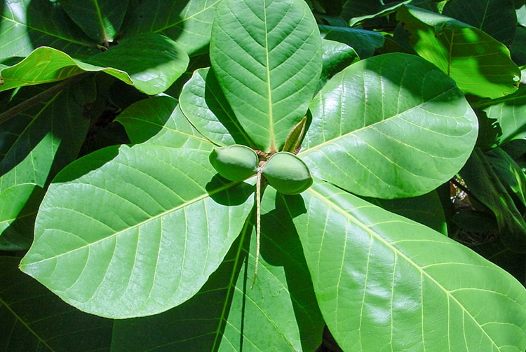
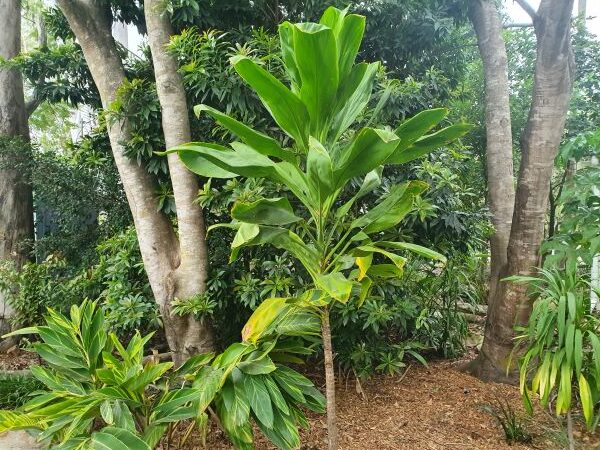
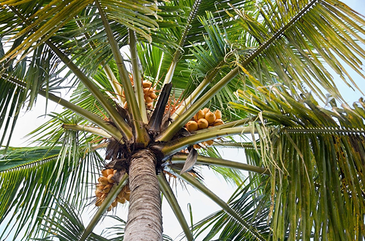
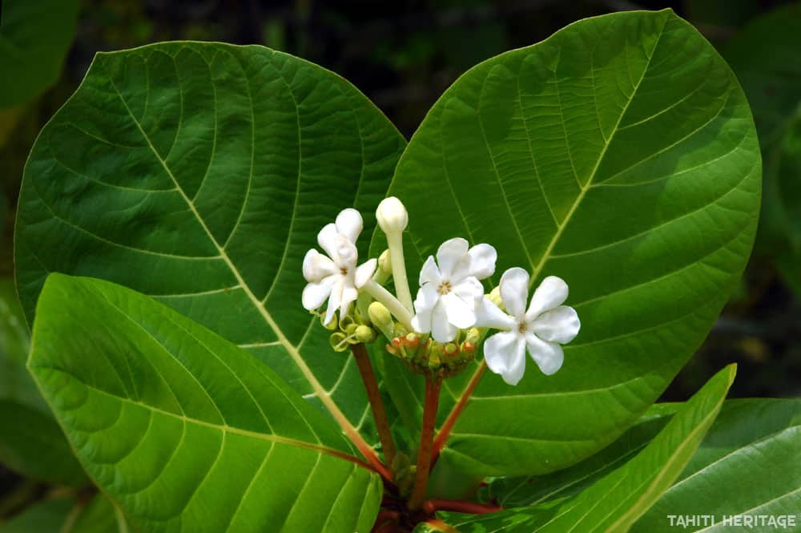
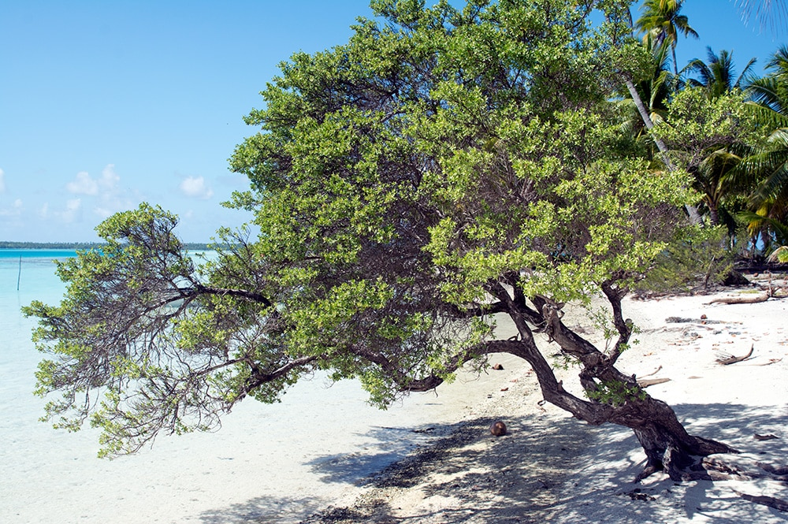
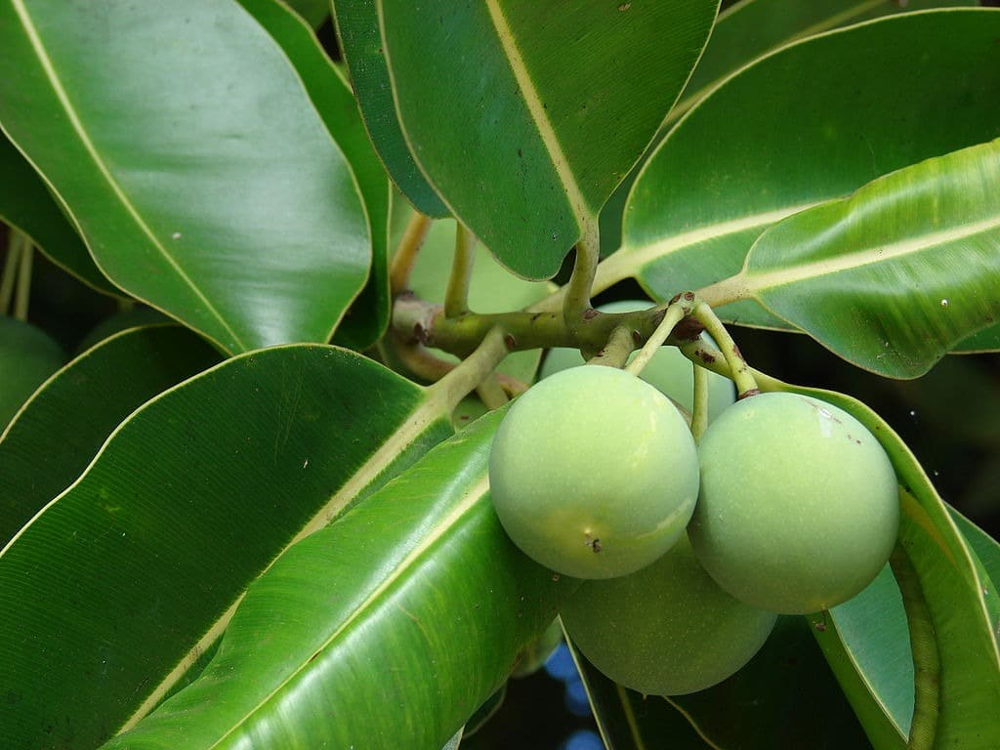
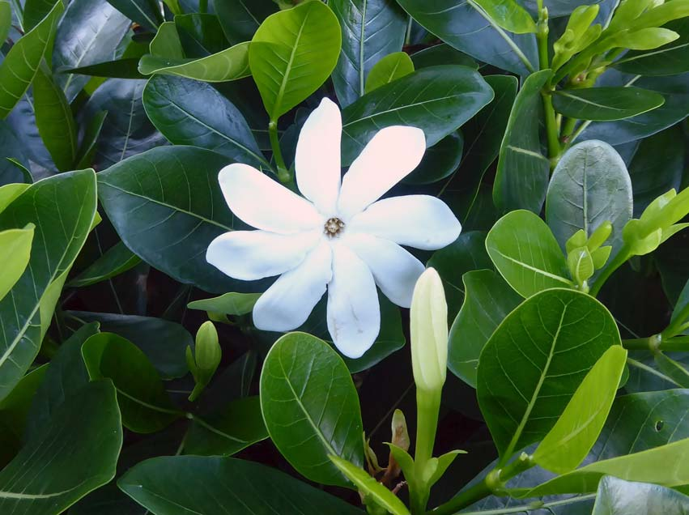
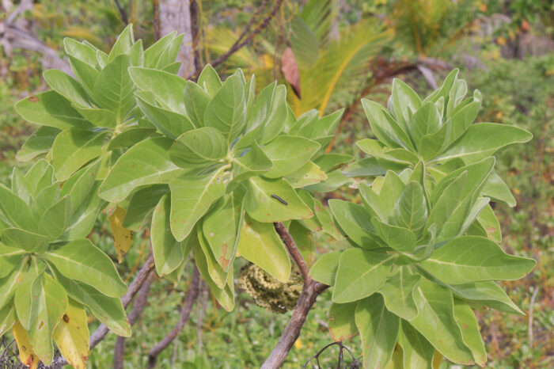

Découvrez la richesse botanique du Fenua 🌺
Le Fare Tiakiva est heureux de vous présenter le projet d’élèves de 3ème du collège de Arue : « VEVO » ou l’écho des arbres à travers la voix des enfants.
Ce projet pédagogique met en lumière les recherches scientifiques, culturelles et artistiques sur quelques végétaux de Polynésie. Les enfants partagent avec vous leurs connaissances mais surtout perpétuent les liens entre la terre, les végétaux et les hommes.
En Polynésie, à la naissance d’un enfant, nous enterrons le placenta « Pu Fenua » et nous plantons un arbre fruitier qui sera nourri par le placenta comme le fut l’enfant dans le ventre de sa mère. Le Polynésien est ainsi rattaché à sa terre et se rappellera toujours d’où il vient, l’arbre donnera des fruits dont on pourra se nourrir ou qui soignera. La terre est déjà associée au terme « Pu Fenua » comme si la femme portait déjà sa terre en elle.
Des QR codes dans le jardin vous permettront de découvrir leur travail sur quelques espèces présentes sur la propriété. Les voix des enfants vous accompagneront sur la voie des végétaux comme un écho des arbres eux-mêmes pour les connaître, les respecter et les préserver.
| Te here o to ù âià i tavai ia ù mai te hii mai | « Oh, l’amour de mon pays ! dont le flot sans relâche |
| Ia âpiti mai i to ù tino tahuti | A baigné ma jeunesse en son âge le plus tendre ; |
| E ia vai a, e ia vai a | Qu’il oigne encore mon corps tout mortel |
| E ia vai a, e ia vai noa atu a | Et vive cet amour, vive ! Vive ! |
| Ei para haamaitai i to ù âià tumu e, | Vive encore et toujours, qu’il vive et abreuve ma terre natale, |
| Ia ruperupe e ia hotu te huaai | Pour que fleurissent en leur essaim, |
| O toù âià. | Les enfants de ce sol, enfants de mon pays.» |

Arbre utilisé pour ses vertus médicinales, l’Auteraa est aussi reconnu pour sa résistance en bord de mer. Ses feuilles sont utilisées en décoction pour soulager fièvre et douleurs, et il joue un rôle écologique en stabilisant les sols littoraux.
→ En savoir plus sur l'Auteraa
Plante sacrée et protectrice, l’auti est utilisée dans les cérémonies traditionnelles et comme plante ornementale. Ses feuilles sont aussi employées en médecine traditionnelle et dans la vie quotidienne pour emballer les aliments ou confectionner des jupes végétales.
→ En savoir plus sur l'Auti
Le cocotier est l'arbre de vie du Pacifique. Il fournit de l'eau, de la nourriture, des matériaux pour la construction et même des produits artisanaux.
→ En savoir plus sur le Cocotier
Arbuste très commun en bord de mer, le Kahaia est une espèce de petit arbre de la famille des Rubiaceae.
→ En savoir plus sur le Kahaia
Le Mikimiki est un arbuste indigène de la Polynésie, connu pour ses petites feuilles brillantes et ses baies décoratives. Il est souvent utilisé pour la restauration écologique et joue un rôle dans la biodiversité locale.
→ En savoir plus sur le Mikimiki
Le tamanu est un arbre sacré pour les Polynésiens. Son huile extraite des noix est très réputée pour ses vertus médicinales et cicatrisantes.
→ En savoir plus sur le Tamanu
Emblème de la Polynésie française, cette fleur blanche très parfumée est souvent utilisée pour confectionner des colliers de bienvenue (hei) et dans les produits cosmétiques locaux.
→ En savoir plus sur le Tiare Tahiti
Le Tohonu, également appelé kanawa ou tou, est un petit arbre côtier reconnu pour son bois résistant utilisé en menuiserie traditionnelle. Il porte des fleurs orangées éclatantes et participe à la fixation du littoral.
→ En savoir plus sur le Tohonu